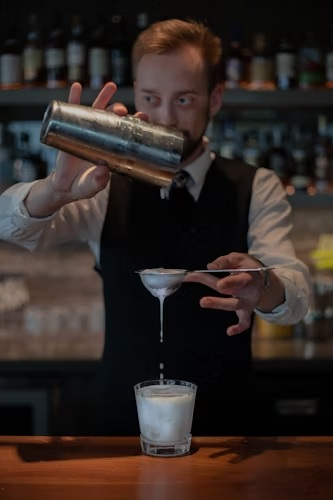

Talleres
1. Cata de Cafés de Especialidad
Aprende a identificar las características únicas del café de especialidad, desde el origen de los granos hasta su perfil de sabor. Este taller incluye una guía completa sobre métodos de cata profesional y técnicas de evaluación sensorial.
Duración: 6 horas (2 sesiones de 3 horas).
Incluye: Material de cata, cafés de diferentes regiones y certificación.

2. Introducción a la Coctelería sin Alcohol
Descubre cómo preparar cócteles sin alcohol creativos y deliciosos, perfectos para eventos familiares o propuestas comerciales. Aprenderás técnicas de mixología clásica adaptadas a bebidas no alcohólicas.
Duración: 4 horas (1 sesión).
Incluye: Ingredientes y manual con recetas exclusivas.
3. Técnicas de Decoración de Cócteles
Este taller te enseñará a crear decoraciones impactantes para cócteles, utilizando frutas, hierbas, espumas y elementos comestibles. Ideal para quienes buscan impresionar a sus clientes o invitados.
Duración: 5 horas (1 sesión).
Incluye: Kit de herramientas para decoración y materiales prácticos.
4. Arte Latte Avanzado
Perfecciona tus habilidades en la creación de diseños con leche vaporizada sobre el café. Desde formas básicas hasta figuras complejas, este taller eleva tus conocimientos en arte latte.
Duración: 8 horas (2 sesiones de 4 horas).
Incluye: Guía práctica, acceso a máquinas profesionales y leches especiales.
5. Coctelería Temática para Eventos
Aprende a diseñar y preparar cócteles inspirados en temáticas específicas como tropical, vintage, o futurista. Ideal para personalizar propuestas para eventos sociales o empresariales.
Duración: 6 horas (2 sesiones de 3 horas).
Incluye: Ingredientes temáticos y manual con ejemplos creativos.
6. Preparación de Infusiones y Bebidas Calientes
Explora el mundo de las infusiones con hierbas, especias y frutas, así como bebidas calientes innovadoras que van más allá del café y el té tradicionales.
Duración: 4 horas (1 sesión).
Incluye: Materia prima de calidad y recetas exclusivas.
7. Introducción al Flair Bartending
Aprende las bases del flair bartending, incluyendo movimientos simples y seguros que agregarán un toque de espectáculo a tu servicio detrás de la barra.
Duración: 6 horas (2 sesiones de 3 horas).
Incluye: Botellas de práctica, equipo especial y tips de showmanship.
Características de los talleres:
Grupos reducidos: Para garantizar atención personalizada.
Instructores expertos: Profesionales reconocidos en el sector de la mixología y el barismo.
Certificación: Recibe un diploma que avala tu participación y conocimientos adquiridos.
Material incluido: Proveemos todos los insumos y herramientas necesarias.
Inscripciones abiertas:
¡No pierdas la oportunidad de aprender y crecer con nosotros! Inscríbete hoy mismo y vive la experiencia de Loma’s Beirut.